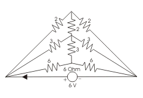

- Consider the following circuit. What is the value of electric current I in the circuit shown ?
As Wheatstone Bridge the two Vertical Resistances can be imagined as open. Therefore the equivalent resistance will be:
Req = (2 + 2)||(3 + 3)||( 6 + 6) Ω
⇒ Req = 4 || 6 || 12 Ω
⇒ Req = 2 Ω
Then,
I = V / Req Amps
⇒ I = 6 / 2 Amps
⇒ I = 3 Amps. - In a balanced Wheatstone bridge, if the position of detector and source are interchanged, the bridge will still remain balanced. This reference can be drawn from
Under Construction.
- The bridge method is used for finding mutual inductor is
Heaviside Campbell bridge is used for finding out mutual inductance.
- Which method is suitable for the measurement of resistivity of good conductors of electricity ?
Kelvin double bridge method is suitable for the measurement of resistivity of good conductors of electricity. It is used to measure an unknown electrical resistance below 1 ohm i.e. low resistances.
- A 0 - 1 mA PMMC ammeter reads 4 mA in a circuit. Its bottom control spring snaps suddenly. The meter will now read nearly
The spring gives the controlling torque and is connected in series with the coil. If the spring is snapped. There will be no deflection.
- Schering bridge is used to measure
A Schering bridge is a bridge circuit used for measuring an unknown electrical capacitance and its dissipation factor.
- The bridge method commonly used for finding mutual inductor is
Heaviside Campbell bridge method is commonly used for finding mutual inductance.
- A full wave fully controlled bridge has a highly inductive load with resistance of 55 Ω and supply voltage of 110 V, 50 Hz what is the power factor of circuit when firing angle is 80 °?
Power factor = cosφ = 0.9 × cos80° = 0.156.
- Schering bridge is used to measure
Capacitance measured by Schering bridge.
- The advantage of Anderson’s bridge over Maxwell bridge is that
- Advantage of Hay’s bridge over Maxwell inductance - capacitance bridge
Hay’s bridge measures high Q inductor Q > 10.
- De - Sauty bridge best suited for
Desauty bridge is best suited for loss less air capacitors.
- Frequency can be measured by which bridge
Wien's bridge is primarily used for determination of an unknown frequency. However, it can be used for various other applications including capacitance measurement, in harmonic distortion analyzers, where it is used as notch filter and also audio and HF oscillators.
Wien's bridge is frequency sensitive. Thus, unless the supply voltage is purely sinusoidal, achieving balance may be troublesome, since harmonics may disturb balance condition. Use of filters with the null detector in such cases may solve the problem. - Head phones / audio amplifiers are used as balance detectors in ac bridge at frequency of
Head phones / audio amplifiers are used as balance detectors in ac bridge at frequency of 250 Hz and above up to 3 - 4 KHz.
- In a balanced Wheatstone bridge if positions of detector and source are interchanged then bridge will still remain balanced. The inference can be drawn from
According to reciprocity theorem, bridge remains under balance condition even if the source and detector are interchanged.
- A moving coil ammeter has full scale deflection of 50 μ. A and coil of resistance 1000 ohms the value of shunt resistance to extend the range to 1 A is ________________ ohms.
Rs = Im × Rm / I - Im
I = max. value of amps. After shunting, Im = full scale deflection of meter, Rm = meter resistance, and Rs = shunt resistance to be connected to extend the rang.
Rs = 1 / 1 - 50 × 10-6 × 1000 = 0.05 ohms. - A moving iron voltmeter is connected across the voltage source whose instantaneous value V(t) = 5 + 10cos( 314 + 30°). The reading of the meter is
RMS value = √( (5)^2 + (10 / √2 )^2) = √(75) V.
- A moving coil instrument whose resistance is 25 gives a full scale deflection with a electric current of 1 MA if its range to be executed to 100 mA if its range to be extended to 100 mA. What is the value of shunt
m = 100, Rsh = Rm ⁄ ( m - 1 ) = ( 25 ⁄ (100-1)) = 0.2525.
- The high torque by weight ratio in an analog indicating instrument indicates
The high torque by weight ratio in an analog indicating instrument indicates always fast response.
- A PMMC voltmeter is connected across a series combination of a DC voltage source V1 = 2 V and AC voltage source V2(t) = 3sin(4t) V. The meter reads
PMMC instrument works only when electric current in the circuit is passed in a definite direction i.e. for dc electric current only. Total voltage across PMMC, Vt = V1 + V2 = 2 + 3sin(4t) V, PMMC reads average value. Average value of V1 is 2 V. Average value of V2 is 0 V. So Average value of Vt = 2 V, So PMMC reads 2 V.
Design with  by SARU TECH
by SARU TECH
www.sarutech.com
Content Credited to electrical4u.com
Online Electrical Engineering Study Site